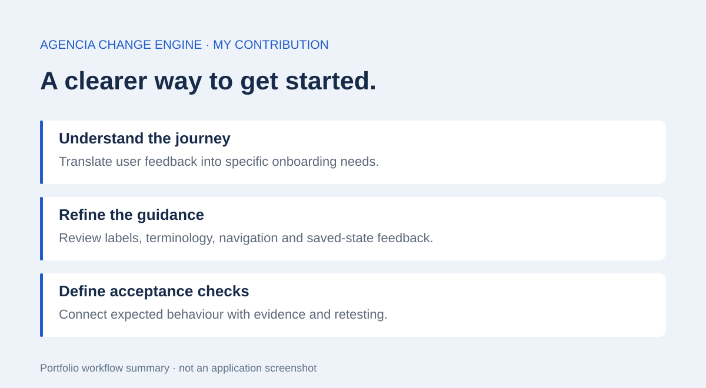

Industry client project · Monash IE · Team 188 · 2026
Agencia Change Engine
Helping new users find their way through an existing organisational change platform.
- My role / scope
- Business analysis, Getting Started / onboarding UX, acceptance-scenario preparation and documentation review.
- Evidence to inspect
- Contribution summary, onboarding decisions and the publicly shared team introduction video.
- Context
- Team delivery for Agencia Change; an existing platform developed across contributors.
The business problem
Change planning connects impacted groups, impact assessment, readiness actions, communications and training. A new user needs to understand where to begin, what each step does and whether progress was saved.


My contribution
| Area | Work I contributed | Acceptance question |
|---|---|---|
| Onboarding requirements | Helped structure feedback into specific user-focused scenarios. | Does the named action match the resulting behaviour? |
| Guidance and terminology | Reviewed labels, navigation, popover placement and wording consistency. | Can the user reach the field and understand the next step? |
| Progress and recovery | Reviewed saved-state, resume and existing-record behaviour. | Can the user continue without duplicating completed work? |
| UAT and handover | Contributed scenario structure and reviewed documentation clarity. | Is the expected result separate from the observed evidence? |
Public team introduction
A project overview from the publicly shared Intro repository. The video describes team work; it does not imply that I built every feature.
What the evidence supports
The team materials support my BA, onboarding, UAT preparation and documentation-review involvement. They do not establish sole authorship of the platform or a single independently verified final pass rate. I do not claim a measured usability uplift.
Detailed client screenshots, technical handover documents and ERDs remain in the restricted evidence collection. This public case can be read without repository access.
Official Monash project showcaseContinue the conversation
Want to discuss the decisions?
I can walk through the evidence and explain the boundaries of my contribution.